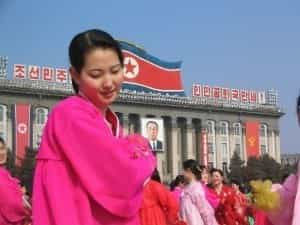
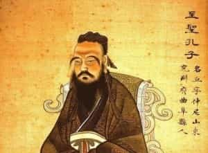
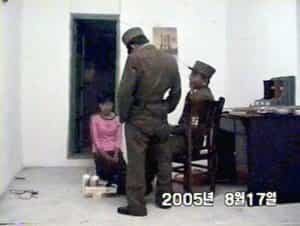
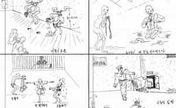

< < < Back
North Korean Refugees Are A Study In Female (Dis)loyalty – Return Of Kings
It’s a pretty common theme around ROK that when the going gets tough: the women start quitting. Many of the writers here—perhaps myself more than others—try to hammer home the point that doing your due diligence means everything when considering any sort of romantic relationships with the opposite sex.
You are not allowed to feel excitement, you are not allowed to feel comfortable, and you’re certainly not allowed to feel love. The second you start to feel those things for a woman—or even worse, express those emotions to her at the wrong time—then it’s going to be over before you know it.
A man’s approach to dating in the present-day climate must be very logical and clinical. Any sort of emotions that one can drum up for a woman must be kept at bay, and only released in small measured doses once certain benchmarks have been met by the woman in question.
Searching for loyalty
If you do happen to stumble upon one that deserves a little more attention beyond a good hard dicking, then one of the benchmarks you’re going to be looking for is loyalty. Loyalty is tough—trust me, I know. I did it for five years with a woman throughout my late teens and early twenties, and I had plenty of opportunities to throw down some pecker on a few willing broads. However, when it was all said and done, it wasn’t me that checked out of the relationship and went astray.
I was cheated on while working the first flying job that routinely kept me away from home. My ex made the assumption that I was cheating on her all the time while I was off working, which couldn’t have been further from the truth. She also strongly discouraged me from pursuing a career as a pilot in the first place.
I, of course, was of the opinion that she could go fuck herself if she thought that she was going to crush my dreams and aspirations—dreams and aspirations that, had she not screwed up, would have paid off for her in a major way in the long run. I also wouldn’t bend to her demands that I “put a ring on it,” considering how broke and unready we were for that at the time.
The takeaway from that relationship and the consequent suffering I endured was that I wasn’t discerning with my choice in a partner. I was more of an idealist than a realist. I’ve always had natural charisma, wit, humor and game—those are the only reasons I managed to keep her around for so long.
It wasn’t her fault that she cheated on me—it was my fault for getting wrapped up with a low-life piece of shit in the first place. I thought I was special: I’m not, and neither are you.
Now, the question is: Where are the loyal women? Where can a decent man find a woman that can meet the reasonable standard of playing with his cock, and his cock alone? Are they abroad? Are there pockets of them hiding somewhere in America? Perhaps the answer lies in a country where none of us can visit to find out.
The Democratic People’s Republic Of Korea

When the majority of us think of North Korea, we probably think of shitty haircuts, famines, nuclear weapons programs, and parades showcasing antiquated military equipment being filmed on 30-year-old camcorders. But there’s a whole culture there that extends beyond just the typical stuff that our media wants us to see. So, if we dig a little bit, we can learn quite a bit about the place.
As I’m sure most readers are aware, the North Korean government structure is communist and ruled in a totalitarian fashion by the Kim Dynasty. If there’s one place on earth that most closely reflects the premise of Orwell’s 1984—it’s North Korea. It wouldn’t be the least bit surprising to learn that Kim Il-Sung read the book at some point in his life, and did not consume it as the stroll down dystopia lane it was intended to be, but more as a manual or handbook on how to rule and build a nation.
Religion is strictly outlawed throughout the country, with Christians being at the top of the Kim’s shit-list. However, Confucianism is very important to the culture of North Korea, and to the entire region in general. Kim Il-Sung’s Juche Ideology, which is taught to all school children and reinforced throughout one’s entire life, derives many of its tenets from Confucianism and is a fundamental part of North Korea’s brainwashing propaganda.
What is of primary importance for the purposes of this article are the Confucian principles circling around the family structure. Here’s an excerpt from the Wikipedia article on the subject, just to give the unitiated a little background:
Social harmony results in part from every individual knowing his or her place in the natural order, and playing his or her part well. When Duke Jing of Qi asked about government, by which he meant proper administration so as to bring social harmony, Confucius replied:
There is government, when the prince is prince, and the minister is minister; when the father is father, and the son is son. (Analects XII, 11, trans. Legge)
Particular duties arise from one’s particular situation in relation to others. The individual stands simultaneously in several different relationships with different people: as a junior in relation to parents and elders, and as a senior in relation to younger siblings, students, and others. While juniors are considered in Confucianism to owe their seniors reverence, seniors also have duties of benevolence and concern toward juniors. The same is true with the husband and wife relationship where the husband needs to show benevolence towards his wife and the wife needs to respect the husband in return. This theme of mutuality still exists in East Asian cultures even to this day.
Unlike the Cultural Marxists of the West, the true Marxists of North Korea hold firm to traditional values. It’s simply embedded into the culture, and it’s not going anywhere—regardless of who’s in charge.

It’s illegal in North Korea for men and women to co-habitate prior to marriage, and there is little to no concept of dating there. Many marriages are set up through agencies—this is to help single men and women find mates in their respective social class (there are three primary songbun classes, and roughly 50 subsets of those classes).
If a woman marries a man of lesser social standing than herself, then she will have to assume his lower status in the hierarchy—and we all know women ain’t gonna to let that shit happen.
Divorces are difficult to obtain. “I’m not happy” is not an acceptable reason for divorce in the DPRK. Valid reasons include infertility and adultery, and even under those circumstances, one’s reputation could be tarnished and their advancement opportunities hindered in other aspects of life should they choose to divorce.
The divorce process is also very time consuming (often lasting for years), with the desired result not always coming to fruition—even with legitimate reasons like those listed above.
Military conscription, which is compulsory for all men and selective women, lasts for a period of 10 years in the Korean People’s Army and up to five years in the other branches. Romantic relationships are forbidden for soldiers during their military service—including marriage.
Most guys don’t even get laid for the first time until they’re in their mid-twenties, and that’s with their wives.The government controls all aspects of its citizens’ lives. Family values are not something that is just glossed over in North Korea—it’s shoved down their throats from the time they’re old enough to comprehend it. This makes the next data point all the more interesting.
The Defectors

South Korea provides asylum to any and all DPRK defectors. It’s impossible for a defector to cross the Korean Demilitarized Zone at the north-south border, so defectors cross over the Yalu river and into China. The normal route is to travel southwest through China, down through Laos, and into Thailand where defectors then seek asylum at the South Korean embassy in Bangkok. Another route is to go through Mongolia, though this is less common.
The South Korean government provides its new citizens with training on how to succeed and adapt to their new lives. They provide them with any necessary medical care and fix their teeth. They then train them on the basics of living in a capitalist society—teaching them how to open bank accounts, how to drive a car, and how to run errands etc.
Newcomers are then provided with an apartment and spending cash to get their new lives started. From start to finish the process that lasts for roughly six months, and an investment in the mid five-figures is expended by the South Korean government.
South Korea keeps records of all defectors from the North, and, as it stands now, of the roughly 30,000 that have made the journey, seventy percent of them are women. There are estimates that North Koreans numbering in the hundreds of thousands are living illegally in China as well. What’s the sex of the overwhelming majority of those illegals, with estimates ranging between seventy-five to ninety percent? You guessed it: women.
Why is this important? Well, this where things get a bit ugly.
Punishment By Lineage

The DPRK has a system known as yeonjwaje, or three generations of punishment. This means that when a crime is committed, especially one political in nature, the perpetrator isn’t the only one to be punished—the family must atone for the sins of the wrongdoer as well.
For example, if I was to commit what is classified as a political crime in North Korea—such as owning a Bible, possessing DVDs of American films, or even tuning into a South Korean radio station—then my grandparents, parents, and siblings would also be punished for my conduct.
And what does that punishment consist of? Well, like any good Stalinist regime, North Korea has a system of kyohwaso (re-education camps) and kwaliso (political prisons). The kyohwaso system for re-education focuses on reforming recidivists that the state deems remediable. Prisoners sent through the kyohwaso system are generally released after a few years of thorough re-education through labor, showing some love to the Supreme Leader, and taking a few good ass-kickings along the way just for good measure.
The kwaliso concentration camps for political prisoners are a different animal. These camps fall into one of two categories: total control zones for the actual offenders, and revolutionary zones for the families of the offenders. Camps like kwaliso No. 14 Internment Camp at Kaechon, or No. 22 at Hoeryong, are examples of total control zones. Kwaliso No. 18 at Pukchang would be an example of a revolutionary zone camp. The difference between the two styles of kwaliso boils down to who controls the camps and the eligibility of release.
The typical prison system of North Korea operates the revolutionary zone camps, and they tend to be a little more lenient (that’s not saying much), prisoners may also be released from the revolutionary zones after time served (or not, depending on circumstances). The total control zone camps, however, are ran by the regimes secret police force: the Bowibu.
These camps are completely isolated from the outside world, and the Bowibu guards of the total control zone camps are trained that inmates are enemies of the state, and, therefore, no longer human beings. The guards are given full authority to beat, torture, and execute inmates for any reason they see fit. The typical life of a prisoner in one these camps consists of periodic torture, routine beatings, systematic starvation, and seven day workweeks lasting 16 hours a day in one of the camps’ factories, mines, or agriculture fields.
Sketches from inmates who were able to escape.
Prisoners are never released from total control zone camps: they are worked to death, starved to death, or die from a myriad of diseases. Political prisoners also make up the majority of the workforce used to build the regime’s underground nuclear research and development facilities—they’re the perfect candidates, seeing that dead people can’t share secrets.
When one defects from North Korea: they are considered a traitor and their crime is political in nature. So guess who gets to carry the burden for those who choose to leave the country? The remaining family members is the answer.
Life in North Korea is not easy: it’s a total shithole, and no one would ever dispute that fact. But one can’t help but notice that—by an overwhelming amount—it’s women who make the decision to jump ship and leave the country. It’s women, at a rate of three or four to one, who are leaving their families vulnerable to perish in the world’s shittiest of circumstances.
These women cannot claim ignorance either: everyone in North Korea is at least aware of the existence of the internment camps, and they are certainly aware of yeonjwaje. Citizens refer to those sent to the camps as, “The people who are sent to the mountains,” so these women know what lies in store for their families when they make the decision to cross the Yalu and into China.
A Man’s Domain
This is where the loyalty of men shines through and shows that we are the true vanguards of virtue. I love my father. I’m very close to him and our relationship has transcended past that of a father son-relationship and into one of deep friendship. During a recent conversation I even joked with him, “Pop, couldn’t you have at least gotten drunk and beat the shit out of me a couple times when I was a kid, or at least told me that I would never amount to anything?”
We both laughed, but in a strange way, I was being somewhat serious. He’s always been there for me. He’s been so good to me, to my mother, and to our entire family that I almost wish he was a worse father, because it’s going to completely devastate me when he dies.
If I knew that my actions would somehow result in my father being beaten, tortured, and worked to death like a fucking rented mule; that he and my mother would be buried in a mass, unmarked grave on the side of a mountain along with all of the other “unpersons”; that their lives would be less valuable than that of a farm animal—then I would never be able live with myself.
Being hungry and on the precipice of death due to starvation would be terrible, and that is a harsh reality for many North Korean citizens outside of Pyongyang. However, would eating a hot bowl of kimchi in a perfectly air conditioned Seoul restaurant taste very good knowing that your relatives were taking beatings and eating raw rats to stave off pellagra just a few hundred miles north?
And worse yet, they’re in that situation all because of you? Would a full stomach be worth it? Would you leave all of your loved ones behind to rot just to save your own fucking skin? Regardless of how close you are to your family, could you, as a man, live with yourself?
It would seem that women are be able to answer “yes” to those question with much more ease. Not through words, of course. Women say shit that sounds good all the time—they can talk a good game with the best of them. However, if it really came down to it and the chips were down; when words meant nothing and actions meant everything, would a woman really be there in the end?
Could you count on a woman to fall on her sword for honor, for family, and for love? Could you count on a woman to be there for you, and only you? I certainly wouldn’t bet my life on it. Hell, I can’t even find a woman who knows how to fucking cook, never mind all of that other shit like honor.
It probably comes as little surprise that the male defectors suffer from depression in greater numbers and have a much more difficult time adjusting to their new lives in the South when compared to their female counterparts. It makes sense: they carry guilt, shame, and worry. Women are able to cope with their decisions much better than men.
In other words, women have the ability convince themselves that their own selfish decisions were the right move to make. A man cannot hide from the truth, it’s always there and he’s always aware of its presence. A man’s conscience can and will eat him alive—there can be no solace for the man who betrays his own.
In Closing
One can’t help but notice that the percentage of female North Korean defectors and the percentage of divorces being filed by women in America is roughly the same number: seventy percent. Granted, some women in both situations will have legitimate reasons for doing what they do (the Koreans more so, certainly).
Some of these North Korean women have no families, perhaps they were orphaned or lost their loved ones to famine; or they were even encouraged by the men in their families to pursue a better life, even if that meant certain death for those men. They had nothing to lose and everything to gain by defecting. Some women in America undoubtedly get divorced for legitimate reasons as well, and no one would ever fault them for that.
But the vast majority of these women are just quitters who are thinking of no one but themselves: everyone else be damned, “I gotta get mine,” and whoever is standing in my way is little more than collateral damage; merely a drop in the old bucket. This is the prevailing attitude, in a nutshell.
When we take into account how conservative North Korean society is; when we take into account that Confucianism is a fundamental part of life there; and when we take into account that loyalty to the system, to the state, and to the family is drilled into the minds of these women perpetually from birth—yet they are the overwhelming majority who say fuck it and hit the road, then I think that’s something we have to consider quite heavily. We are observing female nature in its purest form.
Now, take that female nature and remove all of the traditionalism and replace it with consumerism, selfishness, and girl power—then team that up with the female tendency to always follow the crowd, and it really goes without saying that things around the U.S. start to look pretty fucking scary.
So, are there loyal women out there? Certainly—my mother is a loyal woman, she has been with my father for well over 30 years, and she’s not going anywhere. But the fact of the matter is that finding loyalty in a woman is going to be a very arduous task—especially in this day in age. You’re going to have to search through a thousand spoons to find a knife, there is no other option.
The American woman I dedicated five years of my life to wouldn’t have made it past a brief fuck-buddy arrangement nowadays. But I was forced to learn things the hard way, and I’m a much better man for it. I was a dumbass at the time, and I don’t want other guys to make the same mistake I did.
Many years have passed since that relationship ended, and dozens of women have come and gone since my ex was permanently kicked out of my life. And these other women—save two from abroad—have done nothing more than to reinforce everything I know.
As far as the ones beyond our borders are concerned—they’re better, but only just. You definitely need to be on your toes and know exactly what you’re looking for when you’re out there searching. The lesson to be learned is this: you can only trust the average woman about as far as you can throw her, and considering how fucking fat the average woman is nowadays—that’s not very God damn far.
Gentlemen, we can always count on women to be women—we must accept that and live with it. However, while women will always be women: men can always be men, too. In his memoir, The Aquariums of Pyongyang, DPRK defector Kang Chol-hwon—who, thanks to his grandmother, spent 10 years in revolutionary zone camp No. 15 at Yodok, and was imprisoned there starting from the age of nine—made the following observation about a particular inmate at the camp:
Yet love endured, in spite of everything. It even had its heroes, like the thirty-year-old fellow who arrived at the camp in 1986. He was a good-looking man, and well built, too. According to numbers floating around camp, he had been intimate with at least twenty-eight different women. Success came in spite of, or maybe because of, his reputation as a Don Juan. His pleasure did come at a price, however, for his conquests cost him three trips to the sweatbox, each lasting three months. No prisoner had ever survived so many repeated stints, but he got out safe and sound every time, on his feet and able to walk without help, as though nothing much had happened. We called him the man of steel. His hardiness and sexual prowess made him one of Yodok’s most celebrated and honored prisoners. Even the security agents were impressed and treated him with a certain deference.
Be the man of steel.
Read More: Never Fully Give A Woman Your Loyalty


{kind=link}
{kind=link}
{kind=link}
{kind=link}
{kind=link}
{kind=link}
{kind=link}